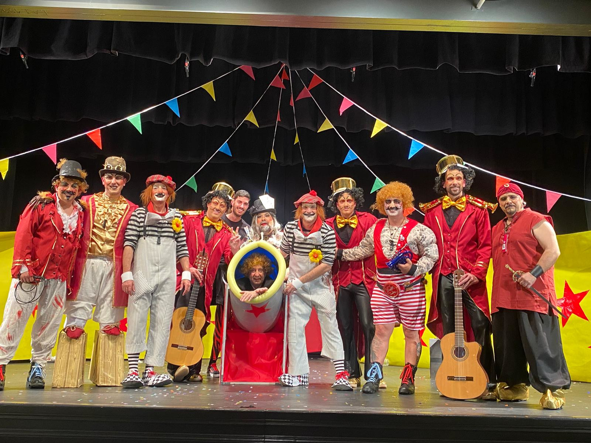

En torralva hay una Chirigota que se creo en el 2014

Los Flamencos del barranco al principio era un grupo de personas que estaban en diferentes hobies por ejemplo:
| Participantes | Hobies anteriores |
|---|---|
| Juan manuel | Teatro |
| Sergio | Nada (respecto al sow) |
| Huete | Tocar en una banda(bombo) |
| Jesus Manuel | Tocar en una banda (caja) |
| Victor | Tocar en una banda (caja) |
| Jesus | Opera |
| Wacha | Opera |
| Jose | Teatro |
| Angel | Nada |
| Miguel | Nada |
| Manga | Teatro (no oficialmente solo por pasion) |